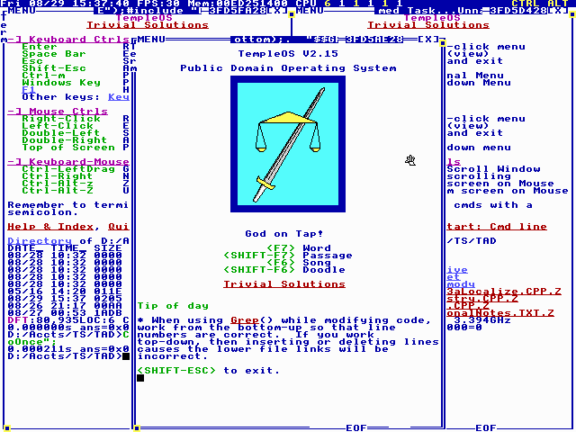

The Temple Operating System 1 Kings 6:21 (King James) 6:21 So Solomon overlaid the house within with pure gold: and he made a partition by the chains of gold before the oracle; and he overlaid it with gold. 6:22 And the whole house he overlaid with gold, until he had finished all the house: also the whole altar that was by the oracle he overlaid with gold. 6:23 And within the oracle he made two cherubims of olive tree, each ten cubits high. Use After Egypt inside TempleOS as an oracle. An oracle is a Ouija Board or Christian Tongues. See Biblical Code:Mean tickle (to kill) person or president.  You get out of prayer what you put in. God said, "honest measures" applies when exchanging an offering for a response from the oracle in TempleOS. Picking a greeting card is an example of love effort. You will get back the same love effort from God. People want things besides God's company. One Tin Soldier. Downloads Guidelines for Talking with God Quotes from God The Temple Operating System Hymn Videos Demands (Now that it is officially God's Temple.) TempleOS History Terry Davis' Rants About Trivial Solutions * "Linux" is probably a trademark owned by Linus Torvalds. * "Windows" and "MSPaint" are trademark of MicroSoft Corp.